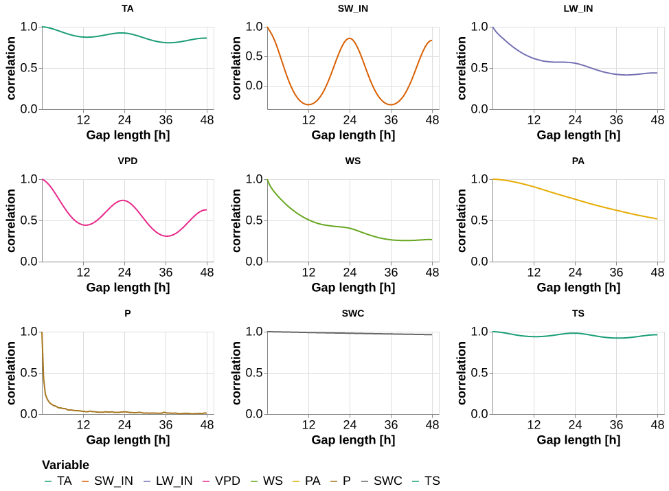
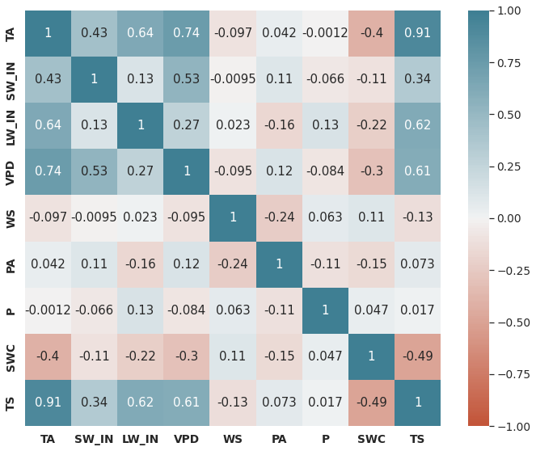
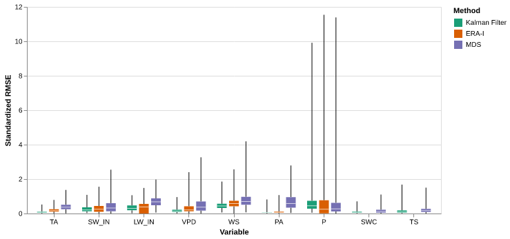
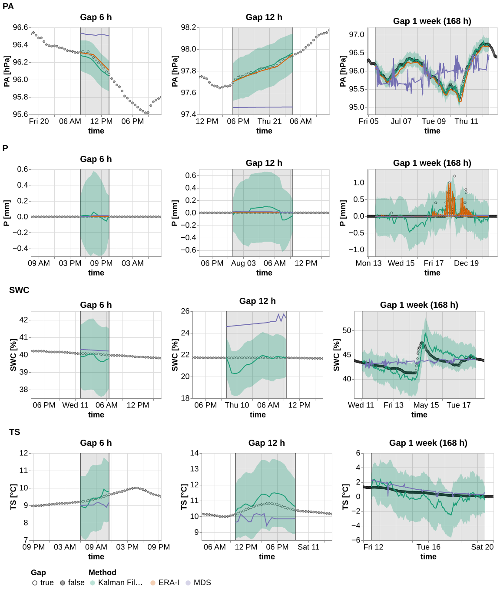
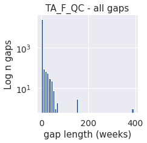
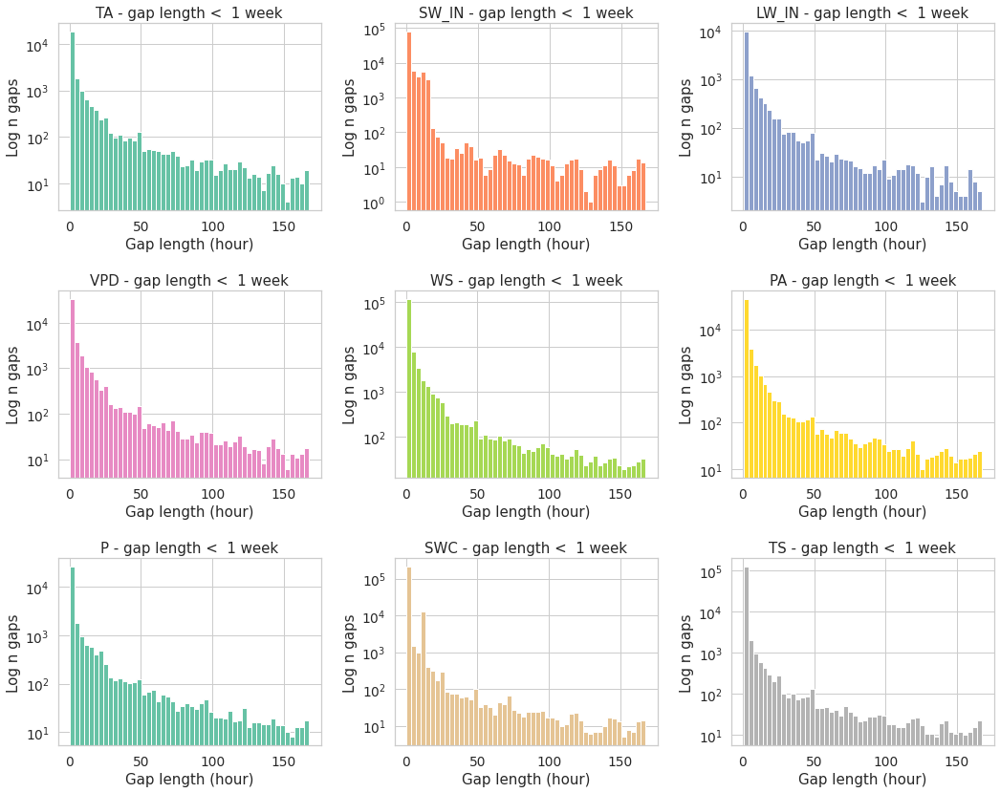
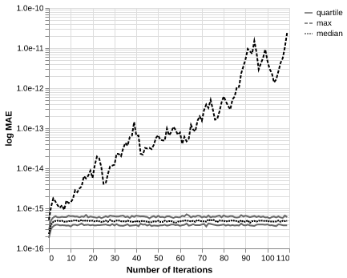
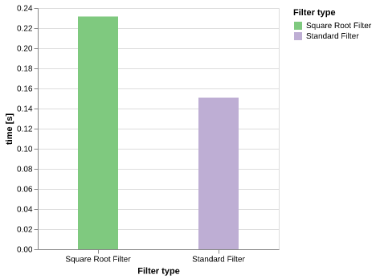

%load_ext autoreload
%autoreload 2Plotting for results
This notebook produces all results plots. It generates some gap in the data, fill with a method (filter, MDS …), compute metrics and then makes all relevant plots
import altair as altfrom meteo_imp.kalman.results import *
from meteo_imp.data import *
from meteo_imp.utils import *
import pandas as pd
import numpy as np
from pyprojroot import here
import torch
import seaborn as sns
import matplotlib.pyplot as plt
import matplotlib
from IPython.display import SVG, Image
from meteo_imp.kalman.results import _plot_timeseries, _get_labels
from functools import partial
from contextlib import redirect_stderr
import io
import polars as pl
from fastai.vision.data import get_grid
import cairosvgthe generation of a proper pdf is complex as altair_render doesn’t support XOffset, so plotsare first renderder to svg using vl-convert and then to pdf using cairosvg. However this last methods doesn’t support negative numbers …
Due to the high number of samples also cannot use the browser render in the notebook so using vl-convert to a png for the visualization in the notebook
import vl_convert as vlc
from pyprojroot import here
base_path_img = here("manuscript/Master Thesis - Evaluation of Kalman filter for meteorological time series imputation for Eddy Covariance applications - Simone Massaro/images/")
base_path_tbl = here("manuscript/Master Thesis - Evaluation of Kalman filter for meteorological time series imputation for Eddy Covariance applications - Simone Massaro/tables/")
base_path_img.mkdir(exist_ok=True), base_path_tbl.mkdir(exist_ok=True)
def save_show_plot(plot,
path,
altair_render=False # use altair render for pdf?
):
plt_json = plot.to_json()
if not altair_render:
svg_data = vlc.vegalite_to_svg(vl_spec=plt_json)
with open(base_path_img / (path + ".svg"), 'w') as f:
f.write(svg_data)
cairosvg.svg2pdf(file_obj=open(base_path_img / (path + ".svg")), write_to=str(base_path_img / (path + ".pdf")))
else:
with redirect_stderr(io.StringIO()):
plot.save(base_path_img / (path + ".pdf"))
# render to image for displaying in notebook
png_data = vlc.vegalite_to_png(vl_spec=plot.to_json(), scale=1)
return Image(png_data)reset_seed()
n_rep = 500hai = pd.read_parquet(hai_big_path).reindex(columns=var_type.categories)
hai_era = pd.read_parquet(hai_era_big_path)alt.data_transformers.disable_max_rows() # it is safe to do so as the plots are rendered using vl-convert and then showed as imagesDataTransformerRegistry.enable('default')Correlation
import matplotlib.pyplot as pltimport statsmodels.api as smdef auto_corr_df(data, nlags=96):
autocorr = {}
for col in data.columns:
autocorr[col] = sm.tsa.acf(data[col], nlags=nlags)
return pd.DataFrame(autocorr)auto_corr = auto_corr_df(hai).reset_index(names="gap_len").melt(id_vars="gap_len")
auto_corr.gap_len = auto_corr.gap_len / 2auto_corr| gap_len | variable | value | |
|---|---|---|---|
| 0 | 0.0 | TA | 1.000000 |
| 1 | 0.5 | TA | 0.998595 |
| 2 | 1.0 | TA | 0.995814 |
| 3 | 1.5 | TA | 0.992141 |
| 4 | 2.0 | TA | 0.987630 |
| ... | ... | ... | ... |
| 868 | 46.0 | TS | 0.959680 |
| 869 | 46.5 | TS | 0.961116 |
| 870 | 47.0 | TS | 0.962085 |
| 871 | 47.5 | TS | 0.962551 |
| 872 | 48.0 | TS | 0.962480 |
873 rows × 3 columns
p = (alt.Chart(auto_corr).mark_line().encode(
x = alt.X('gap_len', title="Gap length [h]", axis = alt.Axis(values= [12, 24, 36, 48])),
y = alt.Y("value", title="correlation"),
color=alt.Color("variable", scale=meteo_scale, title="Variable"),
facet =alt.Facet('variable', columns=3, sort = meteo_scale.domain, title=None,
header = alt.Header(labelFontWeight="bold", labelFontSize=20))
)
.properties(height=120, width=250)
.resolve_scale(y='independent', x = 'independent')
.pipe(plot_formatter))
save_show_plot(p, "temporal_autocorrelation")
axes = get_grid(1,1,1, figsize=(10,8))
sns.set(font_scale=1.25)
sns.heatmap(hai.corr(), annot=True, vmin=-1, vmax=1, center=0,
cmap=sns.diverging_palette(20, 220, n=200), ax=axes[0], square=True, cbar=True)
# axes[0].set(xlabel="Variable", ylabel="Variable", title="Inter-variable Correlation");
# size_old = plt.rcParams["axes.labelsize"]
# w_old = plt.rcParams["axes.labelweight"]
# plt.rcParams["axes.labelsize"] = 30
# plt.rcParams["axes.labelweight"] = 'bold'
plt.tight_layout()
plt.xticks(weight = 'bold')
plt.yticks(weight = 'bold')
with matplotlib.rc_context({"axes.labelsize": 30}):
plt.savefig(base_path_img / "correlation.pdf")
plt.show()
# plt.rcParams["axes.labelsize"] = size_old
# plt.rcParams["axes.labelweight"] = w_old
Comparison Imputation methods
base_path = here("analysis/results/trained_models")def l_model(x, base_path=base_path): return torch.load(base_path / x)models_var = pd.DataFrame.from_records([
{'var': 'TA', 'model': l_model("TA_specialized_gap_6-336_v3_0.pickle",base_path)},
{'var': 'SW_IN', 'model': l_model("SW_IN_specialized_gap_6-336_v2_0.pickle",base_path)},
{'var': 'LW_IN', 'model': l_model("LW_IN_specialized_gap_6-336_v1.pickle",base_path)},
{'var': 'VPD', 'model': l_model("VPD_specialized_gap_6-336_v2_0.pickle",base_path)},
{'var': 'WS', 'model': l_model("WS_specialized_gap_6-336_v1.pickle",base_path)},
{'var': 'PA', 'model': l_model("PA_specialized_gap_6-336_v3_0.pickle",base_path)},
{'var': 'P', 'model': l_model("1_gap_varying_6-336_v3.pickle",base_path)},
{'var': 'TS', 'model': l_model("TS_specialized_gap_6-336_v2_0.pickle",base_path)},
{'var': 'SWC', 'model': l_model("SWC_specialized_gap_6-336_v2_1.pickle",base_path)},
])@cache_disk(cache_dir / "the_results")
def get_the_results(n_rep=20):
reset_seed()
comp_Av = ImpComparison(models = models_var, df = hai, control = hai_era, block_len = 446, time_series=False)
results_Av = comp_Av.compare(gap_len = [12,24, 48, 336], var=list(hai.columns), n_rep=n_rep)
return results_Av
results_Av = get_the_results(n_rep)State of the art
the first plot is a time series using only state-of-the-art methods
reset_seed()
comp_ts = ImpComparison(models = models_var, df = hai, control = hai_era, block_len = 48+100, time_series=True, rmse=False)
results_ts = comp_ts.compare(gap_len = [48], var=list(hai.columns), n_rep=1) res_ts = results_ts.query("method != 'Kalman Filter'")
res_ts_plot = pd.concat([unnest_predictions(row, ctx_len=72) for _,row in res_ts.iterrows()])scale_sota = alt.Scale(domain=["ERA-I", "MDS"], range=list(sns.color_palette('Dark2', 3).as_hex())[1:])p = (facet_wrap(res_ts_plot, partial(_plot_timeseries, scale_color=scale_sota, err_band = False), col="var",
y_labels = _get_labels(res_ts_plot, 'mean', None),
)
.pipe(plot_formatter)
)
save_show_plot(p, "timeseries_sota", altair_render=True)
Percentage improvement
results_Av.method.unique()['Kalman Filter', 'ERA-I', 'MDS']
Categories (3, object): ['Kalman Filter' < 'ERA-I' < 'MDS']all_res = results_Av.query('var != "P"').groupby(['method']).agg({'rmse_stand': 'mean'}).Tall_res| method | Kalman Filter | ERA-I | MDS |
|---|---|---|---|
| rmse_stand | 0.204628 | 0.307361 | 0.482837 |
percentage of improvement across all variables
(all_res["ERA-I"] - all_res["Kalman Filter"]) / all_res["ERA-I"] * 100 rmse_stand 33.42398
dtype: float64(all_res["MDS"] - all_res["Kalman Filter"]) / all_res["MDS"] * 100 rmse_stand 57.619542
dtype: float64res_var = results_Av.groupby(['method', 'var']).agg({'rmse_stand': 'mean'}) res_var = res_var.reset_index().pivot(columns='method', values='rmse_stand', index='var')pd.DataFrame({'ERA': (res_var["ERA-I"] - res_var["Kalman Filter"]) / res_var["ERA-I"] * 100, 'MDS': (res_var["MDS"] - res_var["Kalman Filter"]) / res_var["MDS"] * 100 })| ERA | MDS | |
|---|---|---|
| var | ||
| TA | 54.540802 | 77.713711 |
| SW_IN | 12.004508 | 35.516142 |
| LW_IN | 5.166063 | 52.289627 |
| VPD | 44.402821 | 65.407769 |
| WS | 21.064305 | 40.321732 |
| PA | 28.784191 | 90.751559 |
| P | -18.544370 | -22.084360 |
| SWC | NaN | 41.543006 |
| TS | NaN | 25.772326 |
res_var2 = results_Av.groupby(['method', 'var', 'gap_len']).agg({'rmse_stand': 'mean'}) res_var2 = res_var2.reset_index().pivot(columns='method', values='rmse_stand', index=['var', 'gap_len'])pd.DataFrame({'ERA': (res_var2["ERA-I"] - res_var2["Kalman Filter"]) / res_var2["ERA-I"] * 100, 'MDS': (res_var2["MDS"] - res_var2["Kalman Filter"]) / res_var2["MDS"] * 100 })| ERA | MDS | ||
|---|---|---|---|
| var | gap_len | ||
| TA | 6 | 69.897582 | 85.052698 |
| 12 | 58.766166 | 79.376385 | |
| 24 | 51.538443 | 75.395970 | |
| 168 | 41.823614 | 73.000401 | |
| SW_IN | 6 | 9.519984 | 29.746651 |
| 12 | 11.165399 | 30.639223 | |
| 24 | 14.232051 | 34.811941 | |
| 168 | 12.305658 | 42.651906 | |
| LW_IN | 6 | 21.023524 | 59.136518 |
| 12 | 9.110040 | 52.211404 | |
| 24 | -3.553292 | 50.720632 | |
| 168 | -4.260023 | 48.223005 | |
| VPD | 6 | 66.980942 | 79.449579 |
| 12 | 47.785633 | 69.081018 | |
| 24 | 33.663749 | 56.728120 | |
| 168 | 32.272332 | 57.702579 | |
| WS | 6 | 32.402977 | 45.724043 |
| 12 | 25.209162 | 43.275430 | |
| 24 | 15.543672 | 37.142502 | |
| 168 | 12.735569 | 36.436106 | |
| PA | 6 | 39.823585 | 91.511486 |
| 12 | 30.995845 | 90.532461 | |
| 24 | 24.727301 | 89.319180 | |
| 168 | 20.691181 | 91.421434 | |
| P | 6 | -18.485009 | -13.917879 |
| 12 | -28.935358 | -37.127331 | |
| 24 | -24.423076 | -29.998707 | |
| 168 | -7.725322 | -11.587796 | |
| SWC | 6 | NaN | 61.302664 |
| 12 | NaN | 47.976950 | |
| 24 | NaN | 42.535719 | |
| 168 | NaN | 23.301469 | |
| TS | 6 | NaN | 64.264901 |
| 12 | NaN | 46.699870 | |
| 24 | NaN | 27.050291 | |
| 168 | NaN | -15.268479 |
Main plot
from itertools import product
import altair as altp = the_plot(results_Av)
save_show_plot(p, "the_plot")
p = the_plot_stand(results_Av)
save_show_plot(p, "the_plot_stand")
Table
t = the_table(results_Av)
the_table_latex(t, base_path_tbl / "the_table.tex", label="tbl:the_table",
caption="\\CapTheTable")
t| Kalman Filter | ERA-I | MDS | |||||
|---|---|---|---|---|---|---|---|
| RMSE | mean | std | mean | std | mean | std | |
| Variable | Gap | ||||||
| TA | 6 h | 0.405453 | 0.258301 | 1.346910 | 0.997843 | 2.712546 | 1.896914 |
| 12 h | 0.606836 | 0.400849 | 1.471695 | 0.900611 | 2.942435 | 1.748131 | |
| 1 day (24 h) | 0.741275 | 0.368468 | 1.529614 | 0.800256 | 3.012819 | 1.611311 | |
| 1 week (168 h) | 1.020608 | 0.444591 | 1.754334 | 0.643160 | 3.780087 | 1.315472 | |
| SW_IN | 6 h | 44.636609 | 40.464629 | 49.333113 | 66.241975 | 63.536627 | 85.401585 |
| 12 h | 48.155186 | 33.868178 | 54.207691 | 49.769296 | 69.427115 | 68.936352 | |
| 1 day (24 h) | 56.564277 | 30.042752 | 65.950367 | 40.930505 | 86.770917 | 59.603564 | |
| 1 week (168 h) | 61.582820 | 25.740161 | 70.224393 | 34.883199 | 107.384249 | 53.606111 | |
| LW_IN | 6 h | 10.902409 | 7.736087 | 13.804628 | 12.987987 | 26.680077 | 15.022366 |
| 12 h | 13.421656 | 7.734502 | 14.766929 | 12.584725 | 28.085478 | 13.457335 | |
| 1 day (24 h) | 14.593819 | 7.840046 | 14.093052 | 12.227900 | 29.614461 | 12.416763 | |
| 1 week (168 h) | 17.062880 | 6.425136 | 16.365697 | 11.129569 | 32.954558 | 8.833972 | |
| VPD | 6 h | 0.428187 | 0.363168 | 1.296787 | 1.547397 | 2.083592 | 2.149288 |
| 12 h | 0.660623 | 0.504761 | 1.265213 | 1.288794 | 2.136626 | 2.095549 | |
| 1 day (24 h) | 0.827563 | 0.501975 | 1.247527 | 1.032319 | 1.912472 | 1.605013 | |
| 1 week (168 h) | 1.125680 | 0.633392 | 1.662069 | 1.127314 | 2.661345 | 1.965431 | |
| WS | 6 h | 0.616774 | 0.316972 | 0.912428 | 0.508295 | 1.136367 | 0.783146 |
| 12 h | 0.715412 | 0.350974 | 0.956550 | 0.524247 | 1.261203 | 0.796744 | |
| 1 day (24 h) | 0.801851 | 0.343378 | 0.949427 | 0.446912 | 1.275665 | 0.608630 | |
| 1 week (168 h) | 0.950211 | 0.363124 | 1.088887 | 0.348541 | 1.494891 | 0.615371 | |
| PA | 6 h | 0.045046 | 0.034294 | 0.074856 | 0.061726 | 0.530665 | 0.441476 |
| 12 h | 0.053359 | 0.041613 | 0.077328 | 0.058476 | 0.563603 | 0.427426 | |
| 1 day (24 h) | 0.059481 | 0.038666 | 0.079021 | 0.051491 | 0.556899 | 0.404451 | |
| 1 week (168 h) | 0.066325 | 0.047544 | 0.083628 | 0.053654 | 0.773143 | 0.384029 | |
| P | 6 h | 0.134093 | 0.274033 | 0.113173 | 0.315504 | 0.117710 | 0.305539 |
| 12 h | 0.178871 | 0.295419 | 0.138729 | 0.297227 | 0.130442 | 0.281377 | |
| 1 day (24 h) | 0.206231 | 0.253588 | 0.165750 | 0.288432 | 0.158641 | 0.265257 | |
| 1 week (168 h) | 0.239885 | 0.173820 | 0.222682 | 0.201782 | 0.214975 | 0.197499 | |
| SWC | 6 h | 0.508379 | 0.487342 | NaN | NaN | 1.313730 | 1.556829 |
| 12 h | 0.664855 | 0.471849 | NaN | NaN | 1.278001 | 1.323011 | |
| 1 day (24 h) | 0.779066 | 0.640996 | NaN | NaN | 1.355740 | 1.472185 | |
| 1 week (168 h) | 1.493784 | 0.947799 | NaN | NaN | 1.947605 | 1.488284 | |
| TS | 6 h | 0.341080 | 0.431992 | NaN | NaN | 0.954469 | 0.889126 |
| 12 h | 0.534363 | 0.783787 | NaN | NaN | 1.002555 | 0.876784 | |
| 1 day (24 h) | 0.786670 | 0.851931 | NaN | NaN | 1.078373 | 0.856964 | |
| 1 week (168 h) | 1.659875 | 1.077782 | NaN | NaN | 1.440008 | 0.764040 | |
t = the_table(results_Av, 'rmse_stand', y_name="Stand. RMSE")
the_table_latex(t, base_path_tbl / "the_table_stand.tex", stand = True, label="tbl:the_table_stand",
caption = "\\CapTheTableStand")
t| Kalman Filter | ERA-I | MDS | |||||
|---|---|---|---|---|---|---|---|
| Stand. RMSE | mean | std | mean | std | mean | std | |
| Variable | Gap | ||||||
| TA | 6 h | 0.051164 | 0.032595 | 0.169965 | 0.125917 | 0.342294 | 0.239370 |
| 12 h | 0.076576 | 0.050583 | 0.185712 | 0.113647 | 0.371303 | 0.220595 | |
| 1 day (24 h) | 0.093541 | 0.046497 | 0.193021 | 0.100984 | 0.380185 | 0.203330 | |
| 1 week (168 h) | 0.128790 | 0.056103 | 0.221378 | 0.081160 | 0.477006 | 0.165998 | |
| SW_IN | 6 h | 0.218804 | 0.198354 | 0.241826 | 0.324711 | 0.311450 | 0.418630 |
| 12 h | 0.236052 | 0.166018 | 0.265721 | 0.243964 | 0.340325 | 0.337919 | |
| 1 day (24 h) | 0.277272 | 0.147267 | 0.323282 | 0.200637 | 0.425342 | 0.292171 | |
| 1 week (168 h) | 0.301873 | 0.126176 | 0.344233 | 0.170994 | 0.526387 | 0.262772 | |
| LW_IN | 6 h | 0.259855 | 0.184387 | 0.329028 | 0.309564 | 0.635910 | 0.358053 |
| 12 h | 0.319900 | 0.184349 | 0.351964 | 0.299952 | 0.669407 | 0.320751 | |
| 1 day (24 h) | 0.347838 | 0.186865 | 0.335903 | 0.291448 | 0.705850 | 0.295949 | |
| 1 week (168 h) | 0.406688 | 0.153141 | 0.390071 | 0.265269 | 0.785460 | 0.210555 | |
| VPD | 6 h | 0.098019 | 0.083135 | 0.296855 | 0.354224 | 0.476967 | 0.492006 |
| 12 h | 0.151227 | 0.115548 | 0.289627 | 0.295025 | 0.489108 | 0.479704 | |
| 1 day (24 h) | 0.189442 | 0.114910 | 0.285579 | 0.236314 | 0.437795 | 0.367413 | |
| 1 week (168 h) | 0.257686 | 0.144994 | 0.380474 | 0.258060 | 0.609224 | 0.449918 | |
| WS | 6 h | 0.379454 | 0.195008 | 0.561347 | 0.312715 | 0.699120 | 0.481810 |
| 12 h | 0.440138 | 0.215927 | 0.588492 | 0.322529 | 0.775922 | 0.490176 | |
| 1 day (24 h) | 0.493318 | 0.211254 | 0.584110 | 0.274951 | 0.784819 | 0.374443 | |
| 1 week (168 h) | 0.584592 | 0.223403 | 0.669909 | 0.214431 | 0.919692 | 0.378591 | |
| PA | 6 h | 0.052675 | 0.040103 | 0.087534 | 0.072180 | 0.620545 | 0.516250 |
| 12 h | 0.062397 | 0.048661 | 0.090425 | 0.068381 | 0.659061 | 0.499820 | |
| 1 day (24 h) | 0.069556 | 0.045215 | 0.092405 | 0.060212 | 0.651223 | 0.472953 | |
| 1 week (168 h) | 0.077558 | 0.055597 | 0.097793 | 0.062741 | 0.904092 | 0.449073 | |
| P | 6 h | 0.478431 | 0.977725 | 0.403790 | 1.125691 | 0.419979 | 1.090136 |
| 12 h | 0.638197 | 1.054031 | 0.494974 | 1.060481 | 0.465404 | 1.003928 | |
| 1 day (24 h) | 0.735816 | 0.904779 | 0.591382 | 1.029100 | 0.566018 | 0.946414 | |
| 1 week (168 h) | 0.855891 | 0.620173 | 0.794512 | 0.719941 | 0.767011 | 0.704660 | |
| SWC | 6 h | 0.057037 | 0.054677 | NaN | NaN | 0.147393 | 0.174667 |
| 12 h | 0.074593 | 0.052939 | NaN | NaN | 0.143384 | 0.148434 | |
| 1 day (24 h) | 0.087407 | 0.071916 | NaN | NaN | 0.152106 | 0.165171 | |
| 1 week (168 h) | 0.167594 | 0.106338 | NaN | NaN | 0.218510 | 0.166977 | |
| TS | 6 h | 0.060276 | 0.076342 | NaN | NaN | 0.168674 | 0.157127 |
| 12 h | 0.094433 | 0.138512 | NaN | NaN | 0.177172 | 0.154946 | |
| 1 day (24 h) | 0.139021 | 0.150554 | NaN | NaN | 0.190571 | 0.151443 | |
| 1 week (168 h) | 0.293335 | 0.190466 | NaN | NaN | 0.254479 | 0.135022 | |
Timeseries
@cache_disk(cache_dir / "the_results_ts")
def get_the_results_ts():
reset_seed()
comp_Av = ImpComparison(models = models_var, df = hai, control = hai_era, block_len = 446, time_series=True, rmse=False)
results_Av = comp_Av.compare(gap_len = [12,24, 336], var=list(hai.columns), n_rep=4)
return results_Av
results_ts = get_the_results_ts()ts = plot_timeseries(results_ts.query("var in ['TA', 'SW_IN', 'LW_IN', 'VPD', 'WS']"), idx_rep=0)
save_show_plot(ts, "timeseries_1", altair_render=True)
%time ts = plot_timeseries(results_ts.query("var in ['PA', 'P', 'TS', 'SWC']"), idx_rep=0)
%time save_show_plot(ts, "timeseries_2", altair_render=True)CPU times: user 3.02 s, sys: 836 µs, total: 3.03 s
Wall time: 3.04 s
CPU times: user 8.78 s, sys: 88 ms, total: 8.87 s
Wall time: 13.3 s
from tqdm.auto import tqdm# @cache_disk(cache_dir / "ts_plot", rm_cache=True)
def plot_additional_ts():
for idx in tqdm(results_ts.idx_rep.unique()):
if idx == 0: continue # skip first plot as is done above
ts1 = plot_timeseries(results_ts.query("var in ['TA', 'SW_IN', 'LW_IN', 'VPD', 'WS']"), idx_rep=idx)
save_show_plot(ts1, f"timeseries_1_{idx}", altair_render=True)
ts2 = plot_timeseries(results_ts.query("var in ['PA', 'P', 'TS', 'SWC']"), idx_rep=idx)
save_show_plot(ts2, f"timeseries_2_{idx}", altair_render=True) plot_additional_ts()Kalman Filter analysis
Gap len
@cache_disk(cache_dir / "gap_len")
def get_g_len(n_rep=n_rep):
reset_seed()
return KalmanImpComparison(models_var, hai, hai_era, block_len=48*7+100).compare(gap_len = [2,6,12,24,48,48*2, 48*3, 48*7], var=list(hai.columns), n_rep=n_rep)gap_len = get_g_len(n_rep)KeyboardInterrupt: p = plot_gap_len(gap_len, hai, hai_era)
save_show_plot(p, "gap_len")t = table_gap_len(gap_len)
table_gap_len_latex(t, base_path_tbl / "gap_len.tex", label="gap_len",
caption="\\CapGapLen")
tg_len_agg = gap_len.groupby('gap_len').agg({'rmse_stand': 'mean'})
(g_len_agg.iloc[0])/g_len_agg.iloc[-1]g_len_agg = gap_len.groupby(['gap_len', 'var']).agg({'rmse_stand': 'mean'})
(g_len_agg.loc[1.])/g_len_agg.loc[168.]g_len_aggg_len_agg_std = gap_len.groupby('gap_len').agg({'rmse_stand': 'std'})
(g_len_agg_std.iloc[0])/g_len_agg_std.iloc[-1](gap_len.groupby(['gap_len', 'var']).agg({'rmse_stand': 'std'})
.unstack("var")
.droplevel(0, 1)
.plot(subplots=True, layout=(3,3), figsize=(10,10)))# with open(base_path_tbl / "gap_len.tex") as f:
# print(f.readlines())Control
models_nc = pd.DataFrame({'model': [ l_model("1_gap_varying_336_no_control_v1.pickle"), l_model("1_gap_varying_6-336_v3.pickle")],
'type': [ 'No Control', 'Use Control' ]}) @cache_disk(cache_dir / "use_control")
def get_control(n_rep=n_rep):
reset_seed()
kcomp_control = KalmanImpComparison(models_nc, hai, hai_era, block_len=100+48*7)
k_results_control = kcomp_control.compare(n_rep =n_rep, gap_len = [12, 24, 48, 48*7], var = list(hai.columns))
return k_results_controlfrom time import sleepk_results_control = get_control(n_rep)k_results_controlp = plot_compare(k_results_control, 'type', y = 'rmse', scale_domain=["Use Control", "No Control"])
save_show_plot(p, "use_control")
pfrom functools import partialt = table_compare(k_results_control, 'type')
table_compare_latex(t, base_path_tbl / "control.tex", label="tbl:control",
caption="\\CapControl")
tGap in Other variables
models_gap_single = pd.DataFrame.from_records([
{'Gap': 'All variables', 'gap_single_var': False, 'model': l_model("all_varying_gap_varying_len_6-30_v3.pickle")},
{'Gap': 'Only one var', 'gap_single_var': True, 'model': l_model("all_varying_gap_varying_len_6-30_v3.pickle")},
])@cache_disk(cache_dir / "gap_single")
def get_gap_single(n_rep):
kcomp_single = KalmanImpComparison(models_gap_single, hai, hai_era, block_len=130)
return kcomp_single.compare(n_rep =n_rep, gap_len = [6, 12, 24, 30], var = list(hai.columns))res_single = get_gap_single(n_rep)p = plot_compare(res_single, "Gap", y = 'rmse', scale_domain=["Only one var", "All variables"])
save_show_plot(p, "gap_single_var")t = table_compare(res_single, 'Gap')
table_compare_latex(t, base_path_tbl / "gap_single_var.tex", caption="\\CapGapSingle", label="tbl:gap_single_var")
tres_singl_perc = res_single.groupby(['Gap', 'var', 'gap_len']).agg({'rmse_stand': 'mean'}).reset_index().pivot(columns = 'Gap', values='rmse_stand', index=['var', 'gap_len'])pd.DataFrame({'Only one var': (res_singl_perc["All variables"] - res_singl_perc["Only one var"]) / res_singl_perc["All variables"] * 100})res_singl_perc = res_single.groupby(['Gap', 'var']).agg({'rmse_stand': 'mean'}).reset_index().pivot(columns = 'Gap', values='rmse_stand', index=['var'])pd.DataFrame({'Only one var': (res_singl_perc["All variables"] - res_singl_perc["Only one var"]) / res_singl_perc["All variables"] * 100})Generic vs Specialized
models_generic = models_var.copy()models_generic.model = l_model("1_gap_varying_6-336_v3.pickle")
models_generic['type'] = 'Generic'models_genericmodels_var['type'] = 'Fine-tuned one var'models_gen_vs_spec = pd.concat([models_generic, models_var])models_gen_vs_spec@cache_disk(cache_dir / "generic")
def get_generic(n_rep=n_rep):
reset_seed()
comp_generic = KalmanImpComparison(models_gen_vs_spec, hai, hai_era, block_len=100+48*7)
return comp_generic.compare(n_rep =n_rep, gap_len = [12, 24, 48, 48*7], var = list(hai.columns))
k_results_generic = get_generic(n_rep)plot_formatter.legend_symbol_size = 300p = plot_compare(k_results_generic, 'type', y = 'rmse', scale_domain=["Fine-tuned one var", "Generic"])
save_show_plot(p, "generic")
pt = table_compare(k_results_generic, 'type')
table_compare_latex(t, base_path_tbl / "generic.tex", label='tbl:generic', caption="\\CapGeneric")
tres_singl_perc = k_results_generic.groupby(['type', 'var']).agg({'rmse_stand': 'mean'}).reset_index().pivot(columns = 'type', values='rmse_stand', index=['var'])(res_singl_perc["Generic"] - res_singl_perc["Fine-tuned one var"]) / res_singl_perc["Generic"] * 100Training
models_train = pd.DataFrame.from_records([
# {'Train': 'All variables', 'model': l_model("All_gap_all_30_v1.pickle") },
{'Train': 'Only one var', 'model': l_model("1_gap_varying_6-336_v3.pickle") },
{'Train': 'Multi vars', 'model': l_model("all_varying_gap_varying_len_6-30_v3.pickle") },
{'Train': 'Random params', 'model': l_model("rand_all_varying_gap_varying_len_6-30_v4.pickle") }
])models_train@cache_disk(cache_dir / "train")
def get_train(n_rep):
reset_seed()
kcomp = KalmanImpComparison(models_train, hai, hai_era, block_len=130)
return kcomp.compare(n_rep =n_rep, gap_len = [6, 12, 24, 30], var = list(hai.columns))res_train = get_train(n_rep)res_train_agg = res_train.groupby(['Train', 'gap_len']).agg({'rmse_stand': 'mean'}).reset_index()res_train_aggp = plot_compare(res_train, "Train", y='rmse', scale_domain=["Multi vars", "Only one var", "Random params"])
save_show_plot(p, "train_compare")t = table_compare3(res_train, 'Train')
table_compare3_latex(t, base_path_tbl / "train.tex", label="tbl:train_compare", caption="\\CapTrain")
tExtra results
Standard deviations
hai_std = hai.std().to_frame(name='std')
hai_std.index.name = "Variable"
hai_std = hai_std.reset_index().assign(unit=[f"\\si{{{unit}}}" for unit in units_big.values()])hai_std| Variable | std | unit | |
|---|---|---|---|
| 0 | TA | 7.924611 | \si{°C} |
| 1 | SW_IN | 204.002561 | \si{W m-2} |
| 2 | LW_IN | 41.955741 | \si{hPa} |
| 3 | VPD | 4.368417 | \si{hPa} |
| 4 | WS | 1.625425 | \si{mm} |
| 5 | PA | 0.855159 | \si{m s-1} |
| 6 | P | 0.280276 | \si{W m-2} |
| 7 | SWC | 8.913119 | \si{%} |
| 8 | TS | 5.658643 | \si{°C} |
latex = hai_std.style.hide(axis="index").format(precision=3).to_latex(hrules=True, caption="\\CapStd", label="tbl:hai_std", position_float="centering")
with open(base_path_tbl / "hai_std.tex", 'w') as f:
f.write(latex)Gap distribution
out_dir = here("../fluxnet/gap_stat")site_info = pl.read_parquet(out_dir / "../site_info.parquet").select([
pl.col("start").cast(pl.Utf8).str.strptime(pl.Datetime, "%Y%m%d%H%M"),
pl.col("end").cast(pl.Utf8).str.strptime(pl.Datetime, "%Y%m%d%H%M"),
pl.col("site").cast(pl.Categorical).sort()
])def duration_n_obs(duration):
"converts a duration into a n of fluxnet observations"
return abs(int(duration.total_seconds() / (30 * 60)))files = out_dir.ls()
files.sort() # need to sort to match the site_info
sites = []
for i, path in enumerate(files):
sites.append(pl.scan_parquet(path).with_columns([
pl.lit(site_info[i, "site"]).alias("site"),
pl.lit(duration_n_obs(site_info[i, "start"] - site_info[i, "end"])).alias("total_obs"),
pl.col("TIMESTAMP_END").cast(pl.Utf8).str.strptime(pl.Datetime, "%Y%m%d%H%M").alias("end"),
]).drop("TIMESTAMP_END"))
gap_stat = pl.concat(sites)pl.read_parquet(files[0])
shape: (31574, 3)
| TIMESTAMP_END | gap_len | variable |
|---|---|---|
| i64 | u32 | str |
| 200901010030 | 16992 | "TA_F_MDS_QC" |
| 200912211100 | 5 | "TA_F_MDS_QC" |
| 200912211700 | 1 | "TA_F_MDS_QC" |
| 201001061300 | 1 | "TA_F_MDS_QC" |
| 201001071300 | 3 | "TA_F_MDS_QC" |
| 201001081130 | 2 | "TA_F_MDS_QC" |
| 201001081830 | 1 | "TA_F_MDS_QC" |
| 201001091000 | 2 | "TA_F_MDS_QC" |
| 201001191000 | 1 | "TA_F_MDS_QC" |
| 201001191130 | 2 | "TA_F_MDS_QC" |
| 201001291900 | 1 | "TA_F_MDS_QC" |
| 201002131030 | 2 | "TA_F_MDS_QC" |
| ... | ... | ... |
| 201103241630 | 3 | "NEE_VUT_95_QC" |
| 201103241930 | 29 | "NEE_VUT_95_QC" |
| 201103251900 | 8 | "NEE_VUT_95_QC" |
| 201103260030 | 1 | "NEE_VUT_95_QC" |
| 201103260200 | 1 | "NEE_VUT_95_QC" |
| 201103260300 | 1 | "NEE_VUT_95_QC" |
| 201103261230 | 1 | "NEE_VUT_95_QC" |
| 201103261330 | 2 | "NEE_VUT_95_QC" |
| 201103261630 | 1 | "NEE_VUT_95_QC" |
| 201103261930 | 2 | "NEE_VUT_95_QC" |
| 201103262100 | 1 | "NEE_VUT_95_QC" |
| 201103270000 | 13441 | "NEE_VUT_95_QC" |
gap_stat.head().collect()
shape: (5, 5)
| gap_len | variable | site | total_obs | end |
|---|---|---|---|---|
| u32 | str | str | i32 | datetime[μs] |
| 16992 | "TA_F_MDS_QC" | "AR-SLu" | 52559 | 2009-01-01 00:30:00 |
| 5 | "TA_F_MDS_QC" | "AR-SLu" | 52559 | 2009-12-21 11:00:00 |
| 1 | "TA_F_MDS_QC" | "AR-SLu" | 52559 | 2009-12-21 17:00:00 |
| 1 | "TA_F_MDS_QC" | "AR-SLu" | 52559 | 2010-01-06 13:00:00 |
| 3 | "TA_F_MDS_QC" | "AR-SLu" | 52559 | 2010-01-07 13:00:00 |
def plot_var_dist(var, small=False, ax=None):
if ax is None: ax = get_grid(1)[0]
ta_gaps = gap_stat.filter(
(pl.col("variable") == var)
).filter(
pl.col("gap_len") < 200 if small else True
).with_column(pl.col("gap_len") / (24 *2 * 7)).collect().to_pandas().hist("gap_len", bins=50, ax=ax)
ax.set_title(f"{var} - { 'gaps < 200' if small else 'all gaps'}")
if not small: ax.set_yscale('log')
ax.set_xlabel("gap length (weeks)")
ax.set_ylabel(f"{'Log' if not small else ''} n gaps")
# plt.xscale('log') plot_var_dist('TA_F_QC')
color_map = dict(zip(scale_meteo.domain, list(sns.color_palette('Set2', n_colors=len(hai.columns)).as_hex())))qc_map = {
'TA': 'TA_F_QC',
'SW_IN': 'SW_IN_F_QC',
'LW_IN': 'LW_IN_F_QC',
'VPD': 'VPD_F_QC',
'WS': 'WS_F_QC',
'PA': 'PA_F_QC',
'P': 'P_F_QC',
'TS': 'TS_F_MDS_1_QC',
'SWC': 'SWC_F_MDS_1_QC',
}def pl_in(col, values):
expr = False
for val in values:
expr |= pl.col(col) == val
return exprgap_stat.filter(pl_in('variable', qc_map.values())
).with_columns([
pl.when(pl.col("gap_len") < 48*7).then(True).otherwise(False).alias("short"),
pl.count().alias("total"),
pl.count().alias("total len"),
]).groupby("short").agg([
(pl.col("gap_len").count() / pl.col("total")).alias("frac_num"),
(pl.col("gap_len").sum() / pl.col("total len")).alias("frac_len")
]).collect()
shape: (2, 3)
| short | frac_num | frac_len |
|---|---|---|
| bool | list[f64] | list[f64] |
| false | [0.010775, 0.010775, ... 0.010775] | [63.844386, 63.844386, ... 63.844386] |
| true | [0.989225, 0.989225, ... 0.989225] | [7.261655, 7.261655, ... 7.261655] |
gap_stat.filter(pl_in('variable', qc_map.values())
).with_columns([
pl.when(pl.col("gap_len") < 48*7).then(True).otherwise(False).alias("short"),
pl.count().alias("total"),
pl.count().alias("total len"),
]).groupby("short").agg([
(pl.col("gap_len").count() / pl.col("total")).alias("frac_num"),
(pl.col("gap_len").sum() / pl.col("total len")).alias("frac_len")
]).collect()
shape: (2, 3)
| short | frac_num | frac_len |
|---|---|---|
| bool | list[f64] | list[f64] |
| false | [0.010775, 0.010775, ... 0.010775] | [63.844386, 63.844386, ... 63.844386] |
| true | [0.989225, 0.989225, ... 0.989225] | [7.261655, 7.261655, ... 7.261655] |
frac_miss = gap_stat.filter(
pl_in('variable', qc_map.values())
).groupby(["site", "variable"]).agg([
pl.col("gap_len").mean().alias("mean"),
(pl.col("gap_len").sum() / pl.col("total_obs").first()).alias("frac_gap")
])frac_miss.groupby('variable').agg([
pl.col("frac_gap").max().alias("max"),
pl.col("frac_gap").min().alias("min"),
pl.col("frac_gap").std().alias("std"),
pl.col("frac_gap").mean().alias("mean"),
]).collect()
shape: (9, 5)
| variable | max | min | std | mean |
|---|---|---|---|---|
| str | f64 | f64 | f64 | f64 |
| "LW_IN_F_QC" | 7.074603 | 0.000019 | 0.704469 | 0.578246 |
| "TS_F_MDS_1_QC" | 3.090642 | 0.000011 | 0.38542 | 0.282106 |
| "WS_F_QC" | 2.675324 | 0.000798 | 0.323944 | 0.257303 |
| "SW_IN_F_QC" | 2.193984 | 0.000038 | 0.21952 | 0.16772 |
| "P_F_QC" | 1.503296 | 0.000011 | 0.330422 | 0.311598 |
| "PA_F_QC" | 2.675381 | 0.000011 | 0.420542 | 0.387658 |
| "TA_F_QC" | 2.299027 | 0.000011 | 0.256043 | 0.198846 |
| "SWC_F_MDS_1_QC... | 1.487143 | 0.000011 | 0.29985 | 0.314847 |
| "VPD_F_QC" | 2.298799 | 0.000011 | 0.297668 | 0.245457 |
frac_miss.sort("frac_gap", reverse=True).collect()
shape: (1798, 4)
| site | variable | mean | frac_gap |
|---|---|---|---|
| str | str | f64 | f64 |
| "US-LWW" | "LW_IN_F_QC" | 11267.590909 | 7.074603 |
| "US-Wi5" | "LW_IN_F_QC" | 70128.0 | 3.992031 |
| "ES-LgS" | "LW_IN_F_QC" | 175344.0 | 3.333093 |
| "US-LWW" | "TS_F_MDS_1_QC" | 1320.646341 | 3.090642 |
| "US-Wi5" | "TS_F_MDS_1_QC" | 62.142857 | 2.897194 |
| "US-Wi0" | "LW_IN_F_QC" | 1369.694444 | 2.814601 |
| "US-ORv" | "PA_F_QC" | 3.899334 | 2.675381 |
| "US-ORv" | "WS_F_QC" | 3.899251 | 2.675324 |
| "US-LWW" | "PA_F_QC" | 409.701754 | 2.665944 |
| "US-Wi5" | "WS_F_QC" | 39.57814 | 2.349861 |
| "US-Wi5" | "PA_F_QC" | 51.453972 | 2.322707 |
| "US-Wi5" | "TA_F_QC" | 45.790249 | 2.299027 |
| ... | ... | ... | ... |
| "CN-Ha2" | "P_F_QC" | 1.0 | 0.000019 |
| "CN-Qia" | "P_F_QC" | 1.0 | 0.000019 |
| "FI-Lom" | "P_F_QC" | 1.0 | 0.000019 |
| "CN-Ha2" | "TA_F_QC" | 1.0 | 0.000019 |
| "CN-Cha" | "TA_F_QC" | 1.0 | 0.000019 |
| "CN-Qia" | "SWC_F_MDS_1_QC... | 1.0 | 0.000019 |
| "US-Me6" | "VPD_F_QC" | 1.0 | 0.000011 |
| "US-Me6" | "P_F_QC" | 1.0 | 0.000011 |
| "US-Me6" | "TS_F_MDS_1_QC" | 1.0 | 0.000011 |
| "US-Me6" | "PA_F_QC" | 1.0 | 0.000011 |
| "US-Me6" | "SWC_F_MDS_1_QC... | 1.0 | 0.000011 |
| "US-Me6" | "TA_F_QC" | 1.0 | 0.000011 |
site_info.filter((pl.col("site") == "US-LWW"))
shape: (1, 3)
| start | end | site |
|---|---|---|
| datetime[μs] | datetime[μs] | cat |
| 1997-01-01 00:30:00 | 1999-01-01 00:00:00 | "US-LWW" |
gap_stat.filter((pl.col("site") == "US-LWW") & (pl.col("variable") == "LW_IN_F_QC" )).collect()
shape: (22, 5)
| gap_len | variable | site | total_obs | end |
|---|---|---|---|---|
| u32 | str | str | i32 | datetime[μs] |
| 246556 | "LW_IN_F_QC" | "US-LWW" | 35039 | 2000-01-01 00:30:00 |
| 19 | "LW_IN_F_QC" | "US-LWW" | 35039 | 2014-02-11 08:30:00 |
| 6 | "LW_IN_F_QC" | "US-LWW" | 35039 | 2014-03-08 08:00:00 |
| 1 | "LW_IN_F_QC" | "US-LWW" | 35039 | 2014-03-08 11:30:00 |
| 1 | "LW_IN_F_QC" | "US-LWW" | 35039 | 2014-03-08 13:00:00 |
| 50 | "LW_IN_F_QC" | "US-LWW" | 35039 | 2014-11-18 13:00:00 |
| 21 | "LW_IN_F_QC" | "US-LWW" | 35039 | 2014-11-19 22:30:00 |
| 22 | "LW_IN_F_QC" | "US-LWW" | 35039 | 2014-11-24 23:30:00 |
| 55 | "LW_IN_F_QC" | "US-LWW" | 35039 | 2014-11-26 06:30:00 |
| 172 | "LW_IN_F_QC" | "US-LWW" | 35039 | 2014-11-27 19:30:00 |
| 70 | "LW_IN_F_QC" | "US-LWW" | 35039 | 2014-12-01 23:00:00 |
| 3 | "LW_IN_F_QC" | "US-LWW" | 35039 | 2014-12-03 11:30:00 |
| 35 | "LW_IN_F_QC" | "US-LWW" | 35039 | 2014-12-03 16:30:00 |
| 92 | "LW_IN_F_QC" | "US-LWW" | 35039 | 2014-12-04 11:00:00 |
| 14 | "LW_IN_F_QC" | "US-LWW" | 35039 | 2014-12-11 05:00:00 |
| 36 | "LW_IN_F_QC" | "US-LWW" | 35039 | 2014-12-11 18:00:00 |
| 36 | "LW_IN_F_QC" | "US-LWW" | 35039 | 2014-12-12 17:30:00 |
| 87 | "LW_IN_F_QC" | "US-LWW" | 35039 | 2014-12-13 18:00:00 |
| 70 | "LW_IN_F_QC" | "US-LWW" | 35039 | 2014-12-16 01:30:00 |
| 37 | "LW_IN_F_QC" | "US-LWW" | 35039 | 2014-12-17 16:00:00 |
| 10 | "LW_IN_F_QC" | "US-LWW" | 35039 | 2014-12-21 07:30:00 |
| 494 | "LW_IN_F_QC" | "US-LWW" | 35039 | 2014-12-21 17:30:00 |
import matplotlibmatplotlib.rcParams.update({'font.size': 22})
sns.set_style("whitegrid")def plot_var_dist(var, ax=None, small=True):
if ax is None: ax = get_grid(1)[0]
color = color_map[var]
var_qc = qc_map[var]
ta_gaps = gap_stat.filter(
(pl.col("variable") == var_qc)
).filter(
pl.col("gap_len") < (24 * 2 *7) if small else True
).with_column(pl.col("gap_len") / (2 if small else 48 * 7)
).collect().to_pandas().hist("gap_len", bins=50, ax=ax, edgecolor="white", color=color)
ax.set_title(f"{var} - { 'gap length < 1 week' if small else 'all gaps'}")
ax.set_xlabel(f"Gap length ({ 'hour' if small else 'week'})")
ax.set_ylabel(f"Log n gaps")
ax.set_yscale('log')
plt.tight_layout()vars = gap_stat.select(pl.col("variable").unique()).collect()vars.filter(pl.col("variable").str.contains("TA"))
shape: (4, 1)
| variable |
|---|
| str |
| "TA_F_MDS_QC" |
| "NEE_CUT_USTAR5... |
| "NEE_VUT_USTAR5... |
| "TA_F_QC" |
for ax, var in zip(get_grid(9,3,3, figsize=(15,12), sharey=False), list(var_type.categories)):
plot_var_dist(var, ax=ax)
plt.savefig(base_path_img / "gap_len_dist_small.pdf")
for ax, var in zip(get_grid(9,3,3, figsize=(15,12), sharey=False), list(var_type.categories)):
plot_var_dist(var, ax=ax, small=False)
plt.savefig(base_path_img / "gap_len_dist.pdf")
Square Root Filter
Numerical Stability
from meteo_imp.kalman.performance import *err = cache_disk(cache_dir / "fuzz_sr")(fuzz_filter_SR)(100, 110) # this is already handling the random seedp = plot_err_sr_filter(err)
save_show_plot(p, "numerical_stability")
Performance
@cache_disk(cache_dir / "perf_sr")
def get_perf_sr():
reset_seed()
return perf_comb_params('filter', use_sr_filter=[True, False], rep=range(100),
n_obs = 100,
n_dim_obs=9,
n_dim_state=18,
n_dim_contr=14,
p_missing=0,
bs=20 ,
init_method = 'local_slope'
) perf1 = (get_perf_sr()
.groupby('use_sr_filter')
.agg(pl.col("time").mean())
.with_column(
pl.when(pl.col("use_sr_filter"))
.then(pl.lit("Square Root Filter"))
.otherwise(pl.lit("Standard Filter"))
.alias("Filter type")
))perf1
shape: (2, 3)
| use_sr_filter | time | Filter type |
|---|---|---|
| bool | f64 | str |
| true | 0.231654 | "Square Root Fi... |
| false | 0.150772 | "Standard Filte... |
(perf1[0, 'time'] - perf1[1, 'time']) / perf1[1, 'time'] * 10053.645095282102254plot_perf_sr = alt.Chart(perf1.to_pandas()).mark_bar(size = 50).encode(
x=alt.X('Filter type', axis=alt.Axis(labelAngle=0)),
y=alt.Y('time', scale=alt.Scale(zero=False), title="time [s]"),
color=alt.Color('Filter type',
scale = alt.Scale(scheme = 'accent'))
).properties(width=300)save_show_plot(plot_perf_sr, "perf_sr")